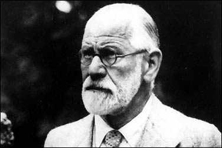

32 SIGMUND FREUD 1356-1939
Sigmund
Freud, pemula cikal bakal psikoanalisa, dilahirkan tahun
1856 di kota Freiberg yang kini terletak di Cekoslowakia,
tetapi tadinya termasuk wilayah Kerajaan Austria. Tatkala
dia berumur empat tahun, keluarganya pindah ke Wina dan di
situlah dia menghabiskan hampir seluruh hidupnya. Freud
seorang mahasiswa yang jempolan di sekolahnya, meraih gelar
sarjana kedokteran dari Universitas Wina tahun 1881. Selama
sepuluh tahun berikutnya dia melakukan penyelidikan mendalam
di bidang psikologi, membentuk staf klinik psikiatri,
melakukan praktek pribadi di bidang neurologi, bekerja di
Paris bersama neurolog Perancis kenamaan Jean Charcot dan
juga bersama dokter Josef Breuer orang Wina.
Gagasan Freud di bidang psikologi berkembang tingkat demi
tingkat. Batu tahun 1895 buku pertamanya Penyelidikan
tentang Histeria terbit, bekerja sama dengan Breuer. Buku
berikutnya Tafsir Mimpi terbit tahun 1900. Buku ini
merupakan salah satu karyanya yang paling orisinal dan
sekaligus paling penting, meski pasar penjualannya lambat
pada awalnya, tetapi melambungkan nama harumnya. Sesudah itu
berhamburan keluar karya-karyanya yang penting-penting, dan
pada tahun 1908 tatkala Freud memberi serangkaian ceramah di
Amerika Serikat, Freud sudah jadi orang yang betul-betul
kesohor. Di tahun 1902 dia mengorganisir kelompok diskusi
masalah psikologi di Wina. Salah seorang anggota pertama
yang menggabungkan diri adalah Alfred Adler, dan beberapa
tahun kemudian ikut pula Carl Yung. Kedua orang itu akhirnya
juga menjadi jagoan ilmu psikologi lewat upaya mereka
sendiri.
Freud kawin dan beranak enam. Pada saat-saat akhir
hidupnya dia kejangkitan kanker pada tulang rahangnya dan
sejak tahun 1923 dan selanjutnya dia mengalami pembedahan
lebih dari tiga puluh kali dalam rangka memulihkan
kondisinya. Meski begitu,dia tetap menemukan kerja dan
beberapa karya penting bermunculan pada tahun-tahun
berikutnya. Di tahun 1938 Nazi menduduki Austria dan si
Sigmund Freud yang sudah berusia 82 tahun dan keturunan
Yahudi itu dipaksa pergi ke London dan meninggal dunia di
sana setahun sesudahnya.
Sumbangsih Freud dalam bidang teori psikologi begitu luas
daya jangkauannya sehingga tidak gampang menyingkatnya. Dia
menekankan arti penting yang besar mengenai proses bawah
sadar sikap manusia. Dia tunjukkan betapa proses itu
mempengaruhi isi mimpi dan menyebabkan omongan-omongan yang
meleset atau salah sebut, lupa terhadap nama-nama dan juga
menyebabkan penderitaan atas bikinan sendiri serta bahkan
penyakit.
Freud mengembangkan teknik psikoanalisa sebagai suatu
metode penyembuhan penyakit kejiwaan, dan dia merumuskan
teori tentang struktur pribadi manusia dan dia juga
mengembangkan atau mempopulerkan teori psikologi yang
bersangkutan dengan rasa cemas, mekanisme mempertahankan
diri, ihwal pengkhitanan, rasa tertekan, sublimasi dan
banyak lagi. Tulisan-tulisannya menggugah kegairahan bidang
teori psikologi. Banyak gagasannya yang kontroversial
sehingga memancing perdebatan sengit sejak
dilontarkannya.
Freud mungkin paling terkenal dalam hal pengusulan
gagasan bahwa gairah seksual yang tertekan sering menjadi
penyebab penting dalam hal penyakit jiwa atau neurosis.
(Sesungguhnya, bukanlah Freud orang pertama yang
mengemukakan masalah ini meski tulisan-tulisannya begitu
banyak beri dorongan dalam penggunaan lapangan ilmiah). Dia
juga menunjukkan bahwa gairah seksual dan nafsu seksual
bermula pada saat masa kanak-kanak dan bukannya pada saat
dewasa.
Berhubung banyak gagasan Freud masih bertentangan satu
sama lain, amatlah sulit menempatkan kedudukannya dalam
sejarah. Dia merupakan pelopor serta penggali, dengan bakat
serta kecerdasan luar biasa yang menghasilkan pelbagai
gagasan. Tetapi, teori-teori Freud (tidak seperti Darwin
atau Pasteur) tak pernah berhasil peroleh kesepakatan dari
masyarakat ilmuwan dan teramat sulit mengatakan bahwa
bagian-bagian mana dari gagasannya yang akhirnya dapat
dianggap sebagai suatu kebenaran.
Lepas dari pertentangan yang berkelanjutan terhadap
gagasan-gagasannya, tampaknya sedikit sekali yang meragukan
bahwa Freud merupakan tokoh menonjol dalam sejarah pemikiran
manusia. Pendapat-pendapatnya di bidang psikologi sepenuhnya
telah merevolusionerkan konsepsi kita tentang pikiran
manusia, dan banyak gagasan serta istilah-istilahnya telah
digunakan oleh umum-misalnya: ego, super ego, Oedipus
complex dan kecenderungan hasrat mau mati.
Memang betul, psikoanalisa merupakan cara penyembuhan
yang teramat mahal dan amat serius dan pula tidak berhasil
apa-apa. Tetapi, juga betul teknik itu meraih sukses-sukses
besar. Para psikolog di masa depan berkesimpulan bahwa
keinginan seksual yang tertekan akan semakin penting
peranannya dalam tingkah laku manusia daripada anggapan para
penganut faham Freud. Tetapi, gairah ini sudah pasti punya
saham besar dari anggapan sebagian psikolog sebelum Freud.
Begitu pula, mayoritas psikolog kini yakin bahwa proses
mental bawah-sadar memegang peranan yang menentukan dalam
tingkah laku manusia, sesuatu hal yang diremehkan orang
sebelum Freud.
Freud memang bukan psikolog pertama, dan dalam jangka
panjang mungkin tidak akan dianggap orang yang
gagasan-gagasannya sebagian besar mendekati kebenaran.
Namun, dia sudah jelas tokoh yang paling berpengaruh dan
paling penting dalam perkembangan teori psikologi modern dan
pandangan-pandangannya yang punya arti sangat besar di
bidangnya menyuguhkan kepadanya hak untuk tercantum dalam
urutan cukup tinggi dalam daftar buku ini.
|